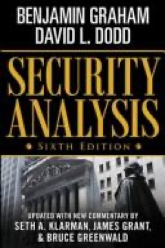
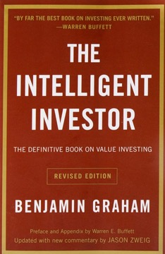
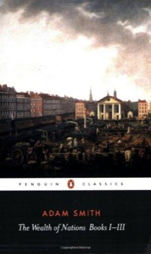
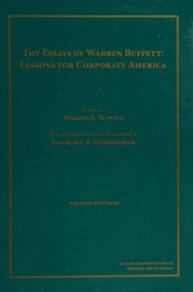

4 เสาหลักความคิดการลงทุนของ Warren Buffett
Buffett เคยบอกว่าเขาอ่านวันละ 500–1,000 หน้า แต่เวลาถูกถามว่า "หนังสือเล่มไหนเปลี่ยนความคิดเขาจริงๆ" ชื่อเดิม 4 เล่มกลับวนมาเสมอ — ไม่ใช่หนังสือแนะนำแบบผ่านๆ แต่คือ "โครงสร้างทางความคิด" ที่อาณาจักรลงทุนระดับแสนล้านถูกสร้างขึ้นมาบนนั้น จะเข้าใจวิธีคิดของ Buffett ต้องเริ่มจากเข้าใจชั้นหนังสือของเขาก่อน
บทนี้เป็นบันทึกการเรียน — สรุป "ใจความสำคัญ" ของหนังสือ 4 เล่ม เพื่อการศึกษา คำคม (quote) คงไว้เป็นภาษาอังกฤษตามต้นฉบับ

Security Analysis
ตีพิมพ์หลังวิกฤตปี 1929 — ยุคที่ "เล่นหุ้น" แทบเป็นคำเดียวกับ "การพนัน" Graham กับ Dodd ออกมาเถียงว่าการลงทุนสามารถ (และต้อง) เป็นศาสตร์ที่มีระเบียบและวิเคราะห์ได้จริง หนังสือเล่มนี้ ปักหมุดความคิดสุดล้ำในตอนนั้นว่า ธุรกิจมี "มูลค่าที่แท้จริง" ที่คำนวณได้ และเป็นอิสระจากราคาตลาด
มูลค่าพื้นฐานของธุรกิจที่มาจากกระแสเงินสด กำไร และสินทรัพย์ในอนาคต (คิดลดกลับมา) มันมีอยู่จริงโดยไม่สนว่า "ตลาด" จะยอมจ่ายเท่าไหร่ในวันนี้ — อัจฉริยภาพของ Graham คือยืนยันว่า ตัวเลขนี้ "ประมาณได้" แม้จะไม่เป๊ะเป็นจุดทศนิยม
อย่าจ่ายเต็มราคา — Graham ยืนกรานให้ซื้อก็ต่อเมื่อราคาตลาดต่ำกว่ามูลค่าที่แท้จริงอย่างมีนัย (มักราว 33–50%) ส่วนต่างนี้คือกันชนที่ดูดซับความผิดพลาดในการวิเคราะห์ เหตุไม่คาดฝันของธุรกิจ และความผันผวนที่หลีกเลี่ยงไม่ได้ของตลาด เปรียบเหมือนวิศวกรสร้างสะพานให้รับน้ำหนักได้ 2 เท่าของที่ต้องใช้จริง
Buffett เรียกสองแนวคิดนี้ — intrinsic value กับ margin of safety — ว่าเป็น "สองคำที่สำคัญที่สุดในการลงทุน" เขาเรียนกับ Graham ที่ Columbia ทำงานในบริษัทของ Graham และยกให้หนังสือเล่มนี้เป็น "DNA ทางความคิด" ของอาชีพเขาทั้งหมด — ถ้าไม่มีเล่มนี้ ก็ไม่มี Berkshire Hathaway
"ราคาคือสิ่งที่เราจ่าย มูลค่าคือสิ่งที่เราได้" ก่อนซื้อหุ้นทุกตัว ต้องตอบให้ได้อย่างเข้มงวดว่า ธุรกิจนี้มีค่าจริงๆ เท่าไหร่ — แล้วค่อยเรียกร้องส่วนลด ใครที่ซื้อโดยไม่มี margin of safety คือกำลังเก็งกำไร ไม่ใช่ลงทุน ต่อให้ thesis ฟังดูหรูแค่ไหนก็ตาม

The Intelligent Investor
ถ้า Security Analysis คือคู่มือเชิงเทคนิค The Intelligent Investor คือ "ปรัชญา" เขียนสำหรับคนทั่วไป เป็นเล่มที่ Buffett ยกให้เป็น "หนังสือลงทุนที่ดีที่สุดเท่าที่เคยมีคนเขียน" เขาเจอมันตอนอายุ 19 และบอกว่ามันให้ "กรอบคิดเรื่องตลาดที่ไม่เคยต้องอัปเดตเลย"
"To invest successfully over a lifetime does not require a stratospheric IQ, unusual business insight, or inside information. What's needed is a sound intellectual framework for making decisions and the ability to keep emotions from corroding that framework."
— Benjamin Graham
Graham สร้างอุปมาที่ทรงพลังที่สุดในวงการ: ลองนึกว่าเราถือหุ้นในธุรกิจร่วมกับหุ้นส่วนชื่อ "Mr. Market" ทุกวันเขาจะมาเสนอซื้อหุ้นเราหรือขายหุ้นเขา ในราคาที่สะท้อนอารมณ์เขาวันนั้น บางวันคึกเสนอราคาเว่อร์ บางวันหดหู่ขายให้เราถูกกว่ามูลค่าจริงมาก พฤติกรรมเขาไร้เหตุผล — หน้าที่เราไม่ใช่เดินตามเขา แต่คือ "ใช้ประโยชน์" จากเขา Mr. Market มีไว้รับใช้เรา ไม่ใช่มาชี้นำเรา
อุปมานี้พลิกความสัมพันธ์ระหว่างนักลงทุนกับตลาดทั้งหมด — กระดานราคาไม่ใช่ "คำตัดสิน" เรื่องมูลค่า มันคือการประมูลราคารายวันที่ขับด้วยอารมณ์มนุษย์ ความผันผวนที่ทำให้นักลงทุนส่วนใหญ่กลัว จริงๆ แล้วคือพันธมิตรที่ดีที่สุด — เพราะมันคือกลไกที่ Mr. Market หยิบธุรกิจดีๆ มาเสนอขายในราคาถูกเป็นระยะ
หนังสือยังแยก "นักลงทุน" ออกจาก "นักเก็งกำไร" ให้ขาด: นักลงทุนซื้อ ชิ้นส่วนของธุรกิจ และสนใจเศรษฐศาสตร์เบื้องหลังมัน ส่วนนักเก็งกำไรซื้อ ตัวย่อหุ้น และสนใจแค่ว่าพรุ่งนี้จะมีคนจ่ายเท่าไหร่ — Buffett บอกว่านี่คือเส้นแบ่งที่สำคัญที่สุดในการเงิน
ศัตรูที่ใหญ่ที่สุดในตลาดไม่ใช่เงินเฟ้อ ดอกเบี้ย หรือภูมิรัฐศาสตร์ — แต่คือ "ตัวเราเอง" นักลงทุนที่นิ่งได้ตอนพอร์ตติดลบ 40% และยังซื้อธุรกิจดีๆ เพิ่มอย่างมีเหตุผล ได้เปรียบเชิงโครงสร้าง เหนือเทรดเดอร์ทุกคนบน Wall Street — "อุปนิสัย" ไม่ใช่ "สติปัญญา" คือสินทรัพย์ที่หายากและมีค่าที่สุดในการลงทุน

The Wealth of Nations
การที่ Buffett แนะนำตำราคลาสสิกของ Adam Smith อาจดูแปลกเมื่อวางข้างคู่มือลงทุน แต่มันสะท้อนความลึกของความคิดเขา — การเป็นนักลงทุนที่ดีไม่ใช่แค่รู้วิธี ตีมูลค่า ธุรกิจ แต่ต้องเข้าใจว่า ทำไม ตลาดเสรีถึงสร้างมูลค่าได้ตั้งแต่แรก — The Wealth of Nations คือ "ระบบปฏิบัติการ" นั้น
แก่นความคิดของ Smith: ปัจเจกที่ไล่ตามผลประโยชน์ตนเองภายใต้ตลาดที่มีการแข่งขัน จะถูกนำ — ราวกับมีมือที่มองไม่เห็น — ให้สร้างผลลัพธ์ที่เป็นประโยชน์ต่อสังคมโดยรวม โดยไม่ต้องมีผู้วางแผนกลาง สัญญาณราคารวบรวมความรู้ที่กระจัดกระจาย และจัดสรรทรัพยากรไปยังการใช้ที่มีมูลค่าสูงสุด ด้วยประสิทธิภาพที่ระบบราชการใดก็ลอกไม่ได้
ข้อสังเกตเรื่องโรงงานเข็มหมุดอันโด่งดัง — คนงาน 10 คนที่แต่ละคนทำงานเฉพาะทาง ผลิตเข็มได้ 48,000 ชิ้น/วัน เทียบกับทำคนเดียวอาจได้คนละ 20 ชิ้น — อธิบายว่าทำไมความเชี่ยวชาญถึงทบต้นผลิตภาพ หลักการนี้เมื่อขยายสู่บริษัทยุคใหม่ อธิบายว่าทำไมธุรกิจที่เก่งจริงในขอบเขตแคบๆ ถึงเอาชนะพวก "ทำทุกอย่างแต่ไม่เด่นสักอย่าง" ได้อย่างเป็นระบบเมื่อเวลาผ่านไป
โลกทัศน์ของ Buffett เป็น Smithian โดยพื้นฐาน — เขาเชื่อในพลังสร้างความมั่งคั่งของทุนนิยม เชื่อว่าการแข่งขันผลักดันให้เก่งขึ้น และเข้าใจว่าธุรกิจที่ทนทานที่สุดคือธุรกิจที่สร้างคุณค่าจริงให้ลูกค้า ในแบบที่คู่แข่งลอกตามได้ยาก ความศรัทธาของเขาต่อ economic moats มีรากมาจากกรอบคิดของ Smith เรื่องวิธีที่ตลาดจัดสรรทรัพยากรและลงโทษความไร้ประสิทธิภาพ
การเข้าใจ Smith ยังช่วยลดความกลัว disruption ของนักลงทุน — "creative destruction" แม้เจ็บปวด แต่คือระบบปฏิบัติการของตลาด ไม่ใช่บั๊กที่ต้องหลบเลี่ยง แต่คือกลไกที่ให้รางวัลนวัตกรรมและลงโทษการหยุดนิ่ง คนที่เข้าใจสิ่งนี้จะมองการเปลี่ยนแปลงเทคโนโลยีไม่ใช่ภัยคุกคาม แต่เป็นแผนที่สู่ธุรกิจรุ่นใหม่ที่ป้องกันตัวได้
ทุนนิยมคือกลไกสร้างมูลค่าที่ทรงพลังที่สุดในประวัติศาสตร์มนุษย์ — และหุ้นคือส่วนแบ่งความเป็นเจ้าของในนั้น การลงทุนในหุ้นไม่ใช่การพนัน แต่คือการซื้อส่วนแบ่งของความเฉลียวฉลาด นวัตกรรม และการประกอบการของมนุษย์ คนที่เข้าใจข้อนี้จะได้เปรียบเรื่อง "ความอดทน" เหนือคนที่มองตลาดเป็นแค่เครื่องผันผวนราคา

The Essays of Warren Buffett
สิ่งที่ Graham ให้ในเชิงทฤษฎี Buffett เอามาขัดเกลาในเชิงปฏิบัติตลอด 6 ทศวรรษผ่านจดหมายถึงผู้ถือหุ้นประจำปี Cunningham นำจดหมายเหล่านั้นมาเรียบเรียงใหม่ตามหัวข้อ (ไม่ใช่ตามปี) จนกลายเป็น "คู่มือปฏิบัติการ" ของ Buffett — ความคิดเรื่องการเงินองค์กร บัญชี คุณภาพผู้บริหาร และปรัชญาความเป็นเจ้าของ กลั่นรวมในเล่มเดียว
Buffett ชี้ว่าทักษะที่สำคัญที่สุดและถูกเข้าใจน้อยที่สุดในธุรกิจคือการจัดสรรทุน — การตัดสินใจว่าจะเอากำไร ที่หามาได้ไปลงตรงไหน ธุรกิจที่ทำเงินปีละ $1,000 ล้านต้องเลือก: ลงทุนต่อ? ซื้อคู่แข่ง? จ่ายปันผล? ซื้อหุ้นคืน? คุณภาพของการตัดสินใจเหล่านี้เมื่อทบต้นหลายสิบปี เป็นตัวกำหนดว่ากำไรสะสมทุก 1 ดอลลาร์จะกลายเป็น $1.50 หรือ $10 — ซีอีโอที่เก่งคือนักจัดสรรทุนที่เก่ง ส่วนซีอีโอธรรมดาไม่ใช่
การขัดเกลาที่ยิ่งใหญ่ของ Buffett ต่อ Graham คือการเปลี่ยนจาก "ซื้อธุรกิจถูก" ไปสู่ "ซื้อธุรกิจวิเศษในราคายุติธรรม" คำถามทดสอบคือ: อะไรปกป้องผลตอบแทนของธุรกิจจากการถูกคู่แข่งกัดกร่อน? moat มีหลายแบบ — พลังแบรนด์ (Coca-Cola, See's), switching cost (Bloomberg Terminal), network effect (Visa, American Express), ความได้เปรียบด้านต้นทุน (GEICO) และใบอนุญาต ธุรกิจที่มี moat ทนทานสามารถขึ้นราคา ผ่านภาวะถดถอย และทบต้นทุนได้หลายสิบปีโดยไม่ต้องพึ่งการตัดสินใจแบบฮีโร่ของผู้บริหาร
"The key to investing is not assessing how much an industry is going to affect society, or how much it will grow, but rather determining the competitive advantage of any given company and, above all, the durability of that advantage."
— Warren Buffett
Essays ยังเปิดโปงความระแวงของ Buffett ต่อเศรษฐศาสตร์ของ "ตัวกลาง" บน Wall Street — ค่าผ่านทางที่วาณิชธนกิจ ผู้จัดการกองทุน และที่ปรึกษาเก็บไปจากผลตอบแทนรวมของนักลงทุน บทวิเคราะห์ว่าต้นทุนเสียดทานค่อยๆ โอนความมั่งคั่งจากนักลงทุนไปสู่มืออาชีพการเงินอย่างเป็นระบบนั้นทั้งสะเทือนใจและปลดปล่อย — มันโต้แย้งอย่างหนักแน่นให้ถือยาว พอร์ตหมุนต่ำ และเลี่ยงความซับซ้อนทางการเงินที่รับใช้ที่ปรึกษามากกว่าลูกค้า
ธุรกิจปานกลางในราคาถูก จะแพ้ธุรกิจวิเศษในราคายุติธรรมเมื่อเวลาผ่านไปสัก 10 ปีขึ้นไป จงค้นหาธุรกิจที่มีความได้เปรียบในการแข่งขันที่ทนทาน บริหารโดยทีมที่ซื่อสัตย์และมีฝีมือ และซื้อได้ในราคาที่ไม่ต้องการความสมบูรณ์แบบ — แล้วถือมันนานพอให้การทบต้นทำงานอย่างเงียบๆ